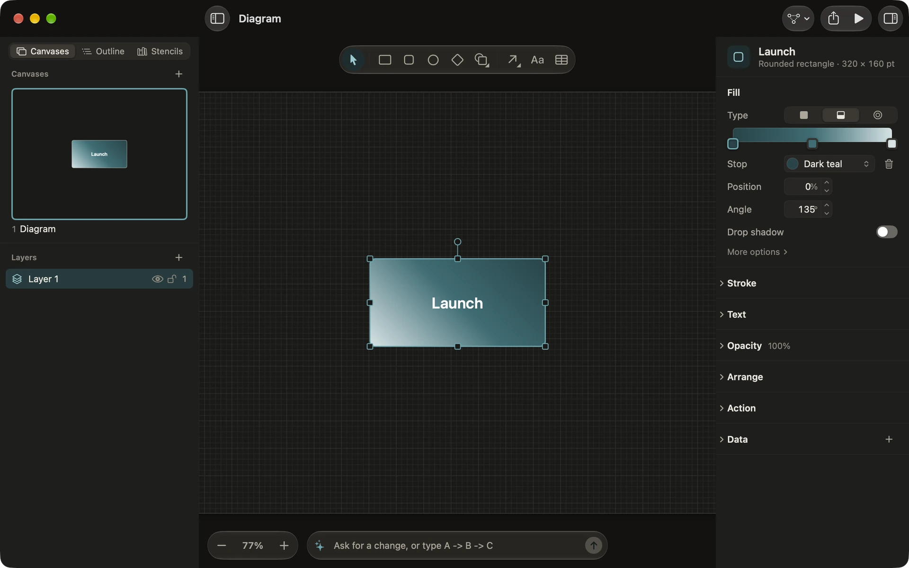
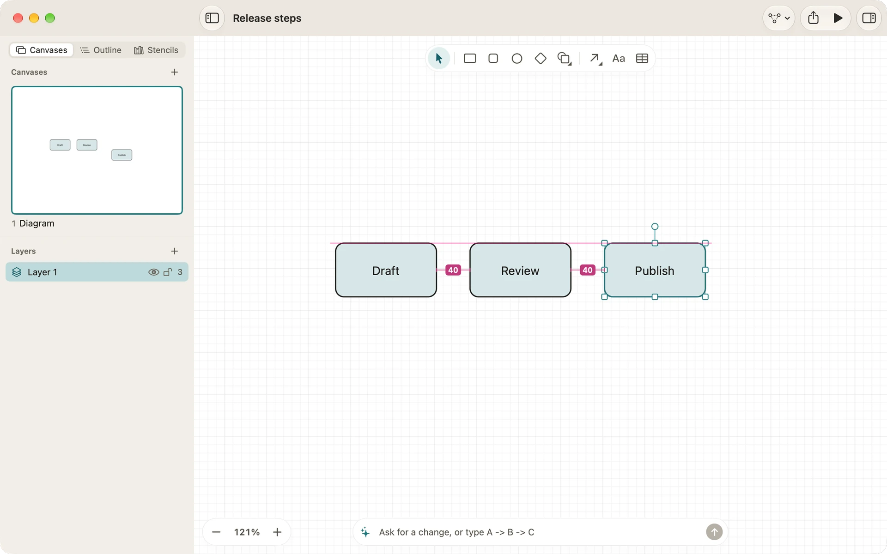
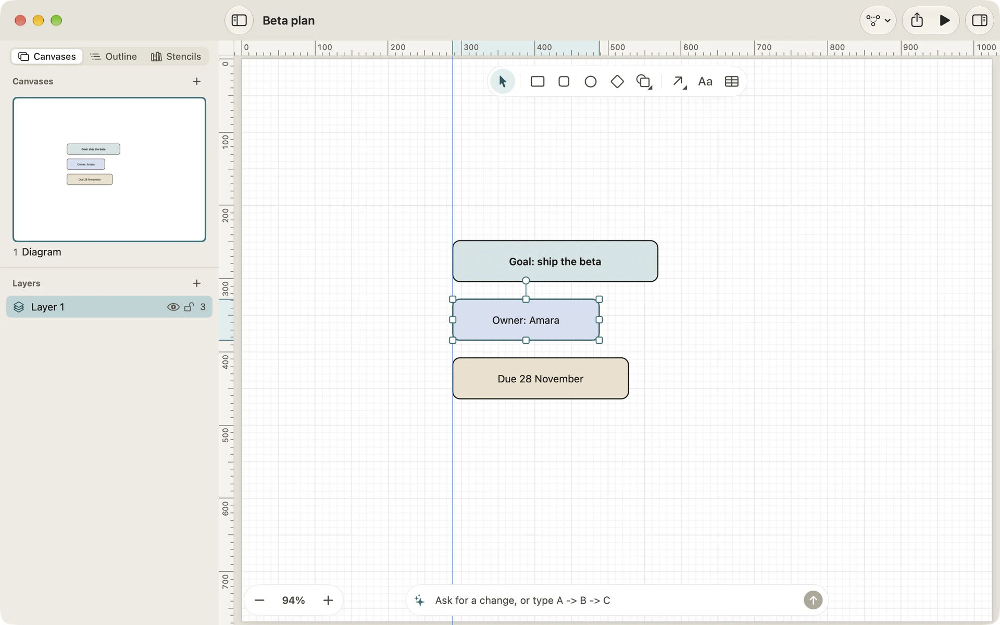
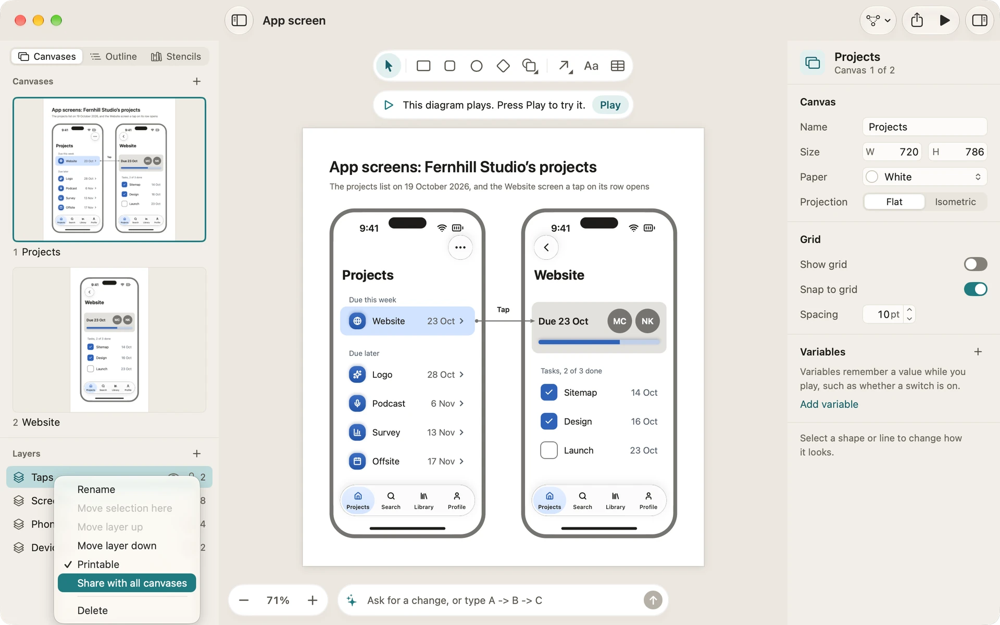

Drawing
Everything you place on a canvas is a graphic: a shape, a line, a group or a table. This page covers how to draw, style and line them up, with smart guides and rulers, and how to organise them in layers and canvases.
Shapes
Choose a shape in the tool palette, then drag on the canvas, or click to place one at its usual size. The palette holds Rectangle (R), Rounded rectangle, Ellipse (O) and Diamond (D); More shapes holds the triangle, hexagon, parallelogram, cylinder, document, note and star.
Drag a selected shape’s handles to resize it. Hold Shift to keep its proportions, and Command to resize without snapping. Select several graphics and the handles resize them all together.
Lines, magnets and connections
Choose Line (L) and drag from one shape to another. As you hover, Diagrove shows the shape a line would attach to and its magnets, the points where a line end snaps and stays. An end attached to a shape is connected: move the shape and the line follows. Drag a line’s end onto another shape to connect it there, or onto empty canvas to leave it free.
The Line tool also sets how new lines are routed: Control-click it on the Mac, or touch and hold it on iPad, and choose Straight, Elbow or Curved. To change a line you’ve drawn, select it and use the inspector’s Line section:
- Route: Straight, Elbow or Curved.
- Ends: the head and tail. The list groups them under Arrows, UML, Entity relationship and Other, from a plain arrow to a hollow triangle, a crow’s foot or an open circle.
- Label: words on the line. Its position along the line can be changed too.
Text
Double-click a shape or a line to type its words (double-tap on iPad). The Text tool (T) places words on their own. The inspector’s Text section sets the font, size, weight, colour, alignment and where the words sit in the shape.
Colours, gradients and shadows
The Fill and Stroke sections set a shape’s colour, outline width and dash. A colour well opens the palette: a row of neutrals, then light, full and dark versions of ten hues (red, orange, amber, yellow, green, teal, blue, purple, pink and slate). A well names a palette colour, such as “Light teal”, and a tone a tint or a paper made by the palette colour nearest it, such as “Dark slate”; any other colour shows its hex value.
Fill’s Type is Solid, Linear gradient or Radial gradient. A gradient has a bar of stops: click the bar to add one, and drag one off or press Delete to remove it. A linear gradient has an angle; a radial gradient has centre and radius handles on the canvas while you edit it. Fill also holds the drop and inner shadows, and Opacity has a blend mode under Blend.

Align and distribute
Select two or more graphics, then choose Arrange › Align (Left edges, Horizontal centres, Right edges, Top edges, Vertical centres or Bottom edges). Select three or more and Arrange › Distribute spaces them evenly, horizontally or vertically. The inspector’s Arrange section has the same buttons.
Snapping and smart guides
As you drag a graphic, it snaps to the edges and centres of the graphics around it, and a guide shows each line it meets. Resize handles, the corner of a shape you’re drawing and the free end of a line snap the same way. Where nothing lines up, a graphic snaps to the grid. With nothing selected, the inspector’s Grid section turns Show grid and Snap to grid on or off and sets the spacing.
Smart guides also measure the space between graphics. As you move one, it snaps to a gap that matches the gaps between the graphics in its row or column, and to the point halfway between the graphics either side of it. Spacing markers show each equal gap with its distance. An edge or centre that lines up wins over a spacing.
When you resize one graphic that isn’t rotated, without Shift, its width or height snaps to match a neighbour’s, and a marker under each of them (beside each, for a height) shows the size they share.
Hold Command while you drag to turn snapping off: for moving, resizing, drawing a shape and placing a line’s end.

Rulers and guides
Choose View › Show rulers (Command-R) to show a ruler along the top of the canvas and one down its side. They measure the canvas in points from the top-left corner of the paper, and mark where the selection starts and ends.
To add a guide, drag from a ruler onto the canvas: from the top ruler for a horizontal guide, from the side ruler for a vertical one. While you drag, the guide shows its position and snaps to the edges of graphics, then to the grid. Drag a guide to move it. To remove one, drag it back onto its ruler or off the canvas, or right-click it and choose Remove guide. Graphics snap to guides as they do to each other’s edges.
View › Guides holds Show guides (or Hide guides), Lock guides, which stops them being dragged, and Clear guides on this canvas. Each canvas keeps its own guides, saved with the document, but they never appear in a print, an export, Play mode, an embed or the web player. Whether the rulers and guides show, and whether guides are locked, is one setting for every document.
On iPad, touch and hold the zoom percentage for the zoom commands, Show rulers and Guides; with a keyboard, Command-R works too. Drag a guide out of a ruler with your finger, and touch and hold a guide for Remove guide.
Isometric canvases have no rulers or guides in 1.0: their floor grid measures them.

Groups
Select graphics and choose Arrange › Group (Shift-Command-G); Ungroup is Shift-Command-U. To work on one graphic inside a group without ungrouping it, double-click the group (double-tap on iPad). The group gets a dashed outline, and whatever you draw or paste joins it. Press Esc, click outside the outline or choose Leave group in the inspector to step out.
Tables
Choose Table in the palette and drag a rectangle for a three-by-three table with a header row, or click for one at the usual size. Double-click a cell to type; Tab goes to the next cell, and Tab in the last cell adds a row. Drag a border between columns or rows to resize one. The inspector’s Table section adds rows and columns, makes them equal and turns the header row on or off; right-click a cell (long-press on iPad) to insert or delete a row or column there.
Pictures
On the Mac, drop a picture or PDF on the canvas, paste one, or choose Insert › Picture… (Shift-Command-I). On iPad, use Insert › Picture from Photos…, Picture from Files… or Insert picture in the toolbar. A picture is a shape, so it can have a border, a shadow and connected lines.
The inspector’s Picture section chooses Fill, Fit or Stretch, replaces the picture and opens Crop…, where you drag the crop or pick a proportion such as Square or 16:9. Cropping keeps the picture where it is on the canvas. Reset crop shows all of it again. To show a picture in another outline, such as a circle, choose a shape in the Picture section’s Mask menu.
Masks
Put a shape behind the graphics you want to clip, select them all and choose Arrange › Mask with selected shape. The backmost shape becomes the mask: its outline clips the rest and it isn’t drawn itself. Arrange › Release mask undoes it. Flip horizontal and Flip vertical are in the same menu; on the canvas, Shift-H and Shift-V flip the selection.
Layers and shared layers
Each canvas has layers, listed under its canvases on the sidebar’s Canvases tab. Choose + beside Layers, or Canvas › New layer (Option-Command-L). Each row can hide or lock its layer; its context menu renames it, moves the selection to it and chooses whether it prints.
A layer’s context menu also has Share with all canvases. A shared layer shows on every canvas, which suits a header, a navigation bar or a page frame: change it on one canvas and every canvas changes. New graphics still go on the canvas’s own top layer; click the shared layer in the list to add to it. Stop sharing makes each copy an ordinary layer again.

Canvases
A document can hold many canvases, such as the screens of an app or the floors of a building. Canvas › New canvas (Option-Command-N) adds one, and Duplicate canvas and Delete canvas are beside it. Click a canvas in the sidebar to show it; its context menu renames it or exports it. Each canvas has its own size, paper and grid in the inspector when nothing is selected.
Related
- Stencils and tints: ready-made graphics to drag in.
- Outline and auto-layout: lay a diagram out for you.
- Isometric canvases: drawing in three dimensions.